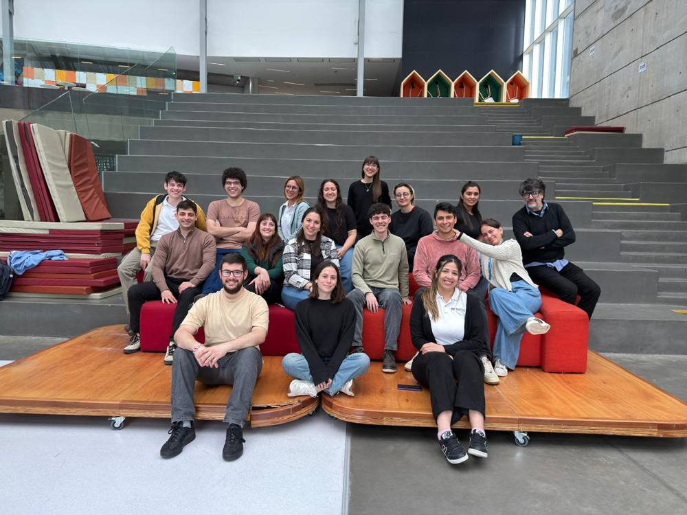
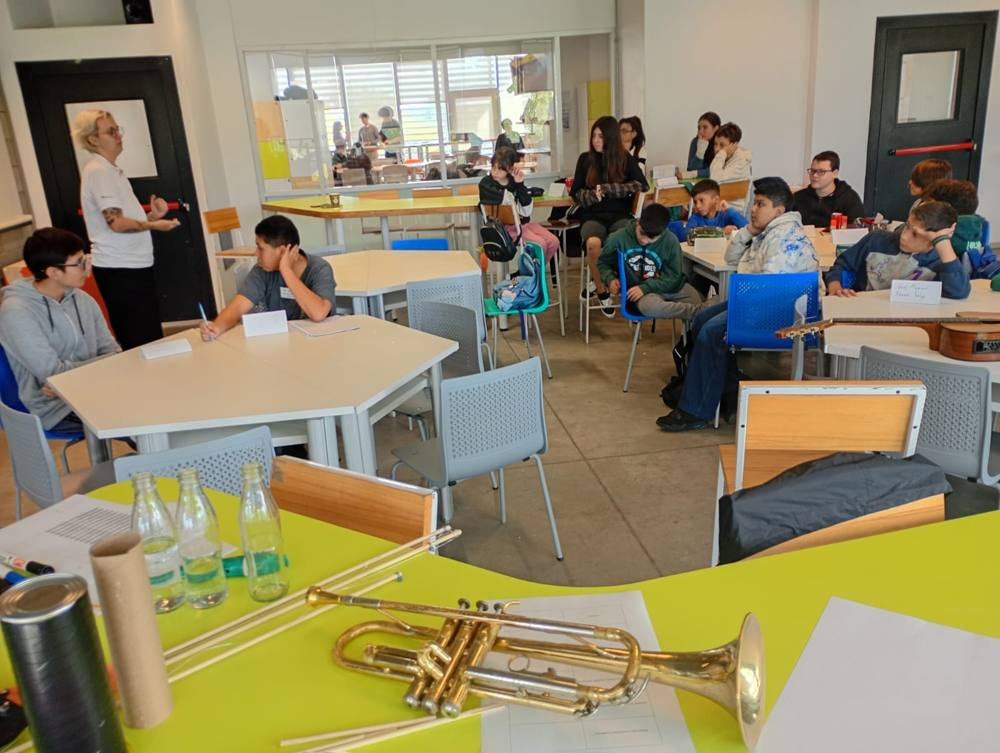
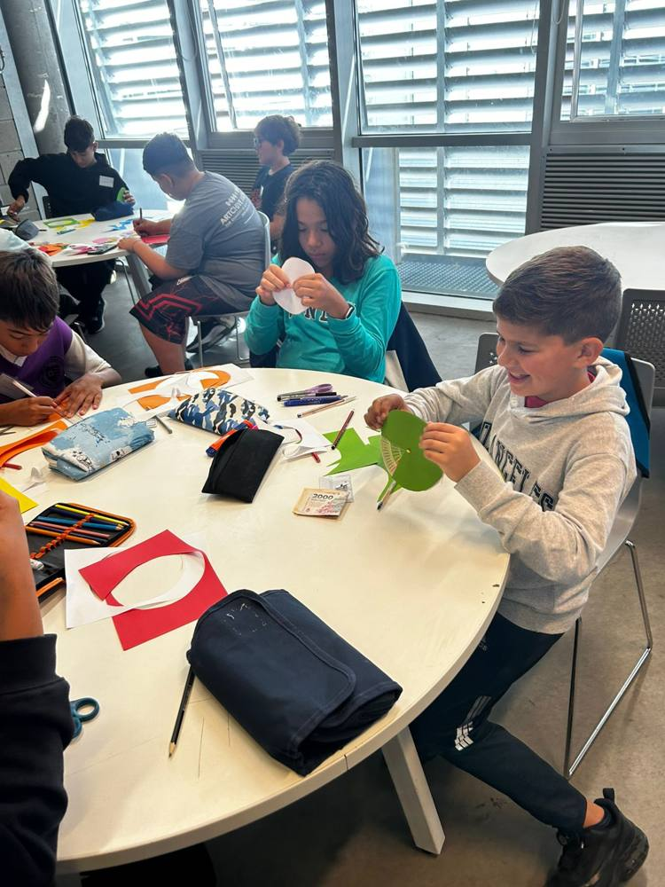
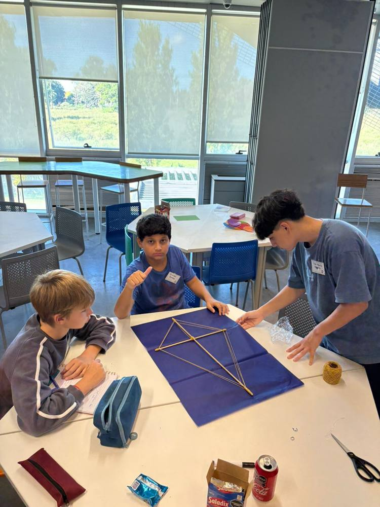
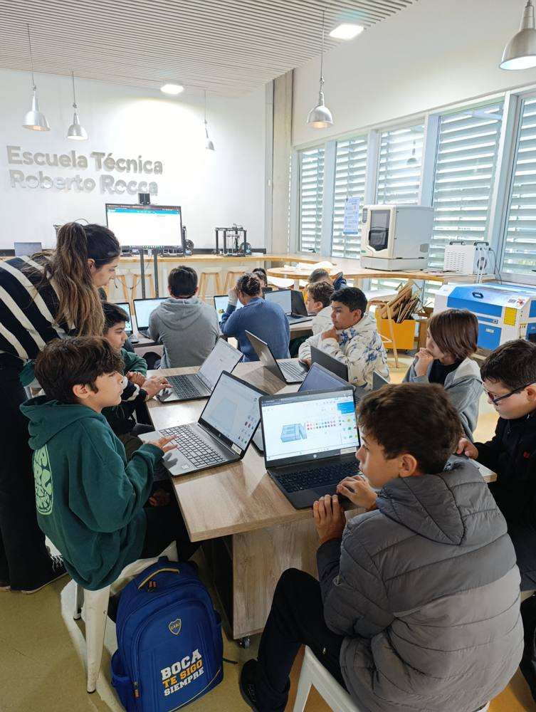
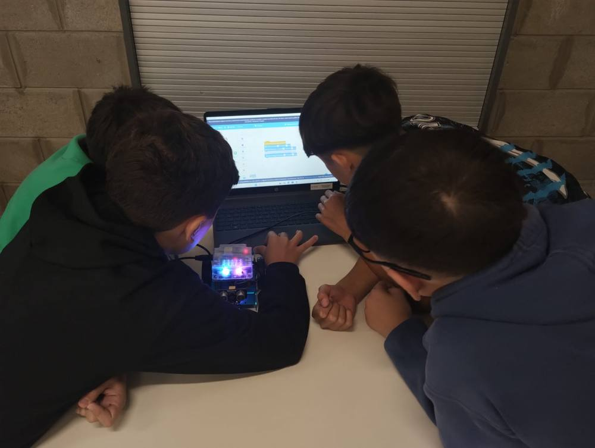
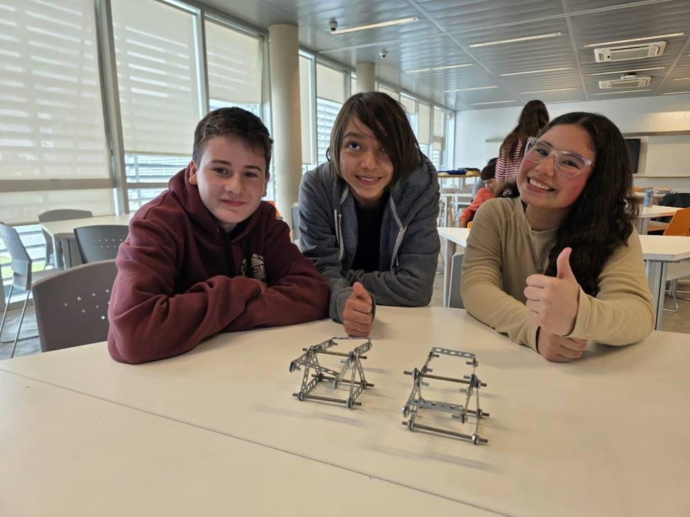

TecnoClubes
Es un espacio de talleres presenciales optativos (en el marco de la ETRR 2026) que busca dar continuidad y seguimiento a los estudiantes que completaron el proceso de integración sin ingresar a la ETRR. Su propósito es profundizar su formación técnico-tecnológica, habilidades transversales y brindar herramientas para la escuela secundaria.
Este año tuve la posibilidad de diseñar y liderar la propuesta de TecnoClubes 2026.
Características principales
- Encuentros. Se cursó los sábados en comisiones mixtas, integradas por estudiantes de primer y segundo año. En total, sumó 28 horas de formación distribuidas en 7 encuentros anuales (3 en el primer cuatrimestre y 4 en el segundo).
- Enfoque. Se trabajaron habilidades STEM, habilidades socioemocionales (HSE) y habilidades técnicas.
- Cierre. Cerraremos el año con un hackathon donde buscaremos integrar todo lo aprendido en el año.
Momentos de los encuentros







Reflexión
Es mi primera experiencia en un rol como este. Fue un gran desafío, disfruté todas las tareas que implicó y me dejó muchos aprendizajes, incluso algunas cuestiones de Excel para optimizar la base de datos.
Agradezco que hayan confiado en mí para esta propuesta.